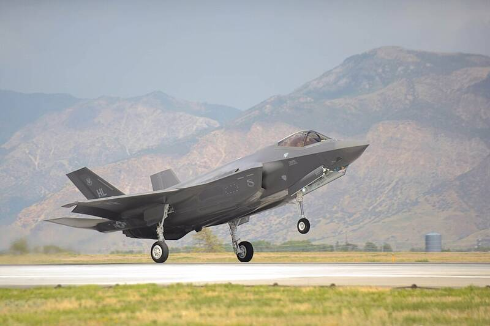

Hill AFB Utah Utah · Military base · 41.125°N, 111.974°W An F-35A touching down at Hill Air Force Base, 2015. Photo: U.S. Air Force, Public domain (source) F-35 base and Air Force sustainment center. 1 Open in the interactive Watcher Sources Hill Air Force Base Wikipedia